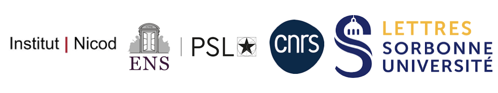

Paris Valence Workshop 2025
About
We are very excited to announce a special workshop: "New – experimental – perspectives on valence in language" supported by Sorbonne Université's project Emergence "REV" OP24-126 and the ERC Advanced Grant "Valence Asymmetries" n° 101142133.
This workshop is hosted by the Sorbonned université, and organized by
Workshop Dates:
Location: Sorbonne Universitè, room info TBD
Invited Speakers
- Nicole Gotzner
- Diana Mazarella
- Josh Knobe
Organizers
- Anouch Bourmayan
- Pascale Ludwig
- Morgan Moyer
Scientific Committee
- Isidora Stojanovic
- Brent Strickland